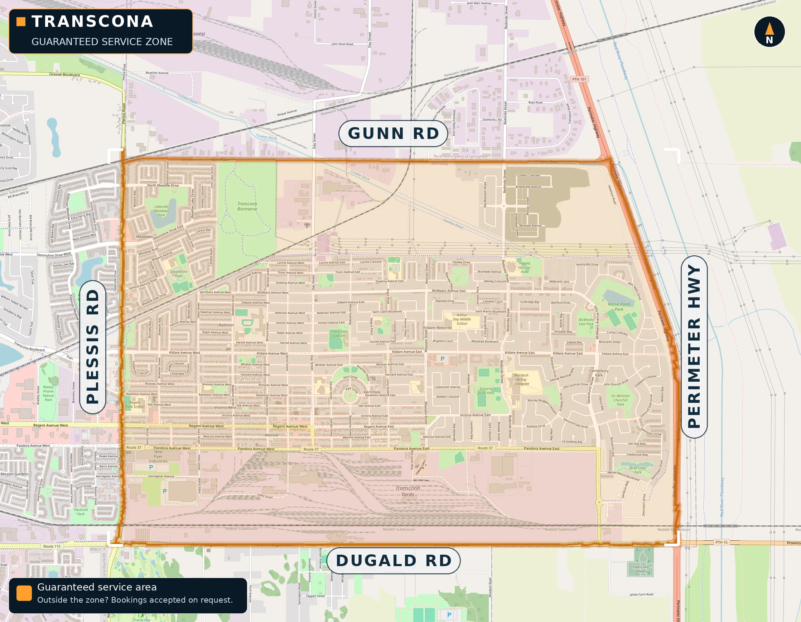

QUESTIONS, ANSWERED.
The stuff Transcona neighbours ask us most.
No questions match your search.
Snow clearing
How do the snowfall triggers work?
We watch the forecast. When snowfall reaches your plan's trigger — 6 cm for Essential, 4 cm for Complete, 2 cm for Premium — we come out and clear within 15 hours of the snow stopping.
What exactly gets cleared each visit?
Your driveway, your walkway, and optional complimentary snow brushing for up to two vehicles parked in the driveway (available on request). Windrow clearing (the ridge the city plow leaves) is included with Complete and Premium; Essential can add it for $25 per visit.
What if I'm not home when it snows?
No problem — we clear whether you're home or not. That's the whole point: wake up or come home to a clear driveway.
Will your equipment damage my driveway or lawn?
We work damage-conscious on every visit. Professional, reliable, damage-free isn't a slogan — it's the standard.
Do you offer one-time snow clearing?
Yes — $45 per visit, windrow clearing included, cleared within 12 hours of your request. No plan required.
What is a windrow, and do you clear it?
The windrow is the ridge of snow the city plow leaves across the end of your driveway. It’s included with Complete and Premium plans, or add it to Essential for $25 per visit.
Do you salt or sand icy driveways?
Sanding is included with our Premium plan and available on other plans for $15 per application.
Will you let me know before each visit?
If you’d like a heads-up before we arrive, just ask — we notify before visits on request.
What if my cars are in the driveway when you come?
No problem — we’ll do our best to clear around and under your vehicles, and on request, we can brush them off with soft car brushes as a complimentary service.
When does the season run?
November through March, every winter.
Pricing & payments
How and when do I pay?
E-transfer, debit, or credit. Monthly invoices go out on the 1st of the month and are due by the 15th; per-visit invoices are due within 15 days.
What happens if my payment is late?
Monthly invoices are due by the 15th of the month billed; per-visit invoices are due within 15 days. Balances unpaid after 31 days accrue interest at 5% APR, and service pauses after 45 days unpaid.
Can I cancel my plan mid-season?
Yes — either party may cancel with 30 days’ written notice. If you signed a season contract, there’s a $50 charge for each month remaining in the season.
Do you offer any discounts?
Yes — customers age 55+ get 10% off, and customers with a disability get 10% off. Just mention it at sign-up and it’s applied at billing. The two discounts cannot be combined, and the disability discount does not stack with early-bird prepay rates. Plus our Neighbour Referral Program gets you and a friend $25 each. And right now the very first customer gets an extra 35% off early-bird season rates.
Booking & service area
Which areas do you serve?
We guarantee service across Transcona, Winnipeg — an area roughly bounded by Gunn Road (north), Dugald Road (south), Plessis Road (west), and the Perimeter Highway (east). Beyond these boundaries, we accept bookings on request. 
How do I get started?
Fill in the booking form on our Book page, or request a free estimate — online or in-person. No pressure, no obligation.
Do you do commercial work?
We clear walkways for small storefronts in Transcona — free custom quote per property.
Does your service include ice scraping?
Yes — ice scraping for driveways and walkways is included with Complete and Premium plans. One exception: we never scrape ice off vehicles — that is a scratch risk we will not take with your car.
Spring, summer & fall
What's included in a spring cleanup?
Removal of all debris and dead vegetation — from $50. Pet waste is not included. Every job starts with a free estimate — online or in-person.
Do you mow on a regular schedule?
Yes — weekly mowing for contract clients, or book us per visit whenever you need it. From $40.
Do you bag the clippings and leaves?
Yes — all waste is bagged and removed, unless you’d prefer we mulch it back in.
What summer services do you offer besides mowing?
Comprehensive yard care — hedging, garden beds and more. Tell us what you need and we’ll quote it free.
What's included in a fall cleanup?
Leaf cleanup plus pickup of all plant and tree droppings and any garbage in the yard — from $50. Please note: we don't pick up pet waste.
Should I mark anything in my yard before winter?
It’s very much appreciated — marking sprinkler heads and hidden edges keeps your lawn looking great in spring. We can also do this for you during a fall cleanup.
What services do you offer besides snow clearing?
We’re year-round: spring cleanup and aeration, summer mowing and landscaping, fall leaf cleanup. See our Services page for details.
Referrals
How does the referral program work?
New customers get $25 off their first invoice and you get a $25 credit once it’s paid — with unlimited referrals. See our Referral page for details.